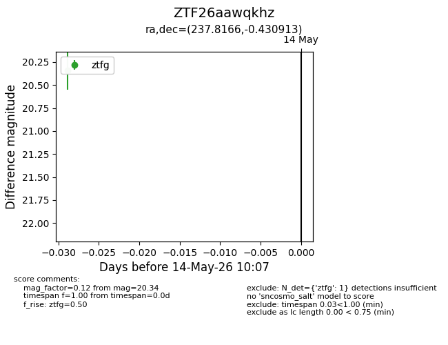
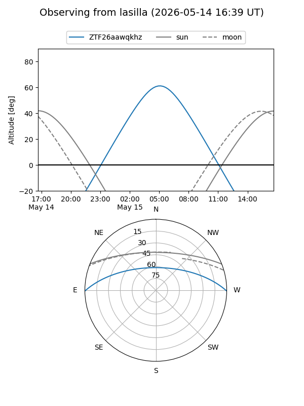
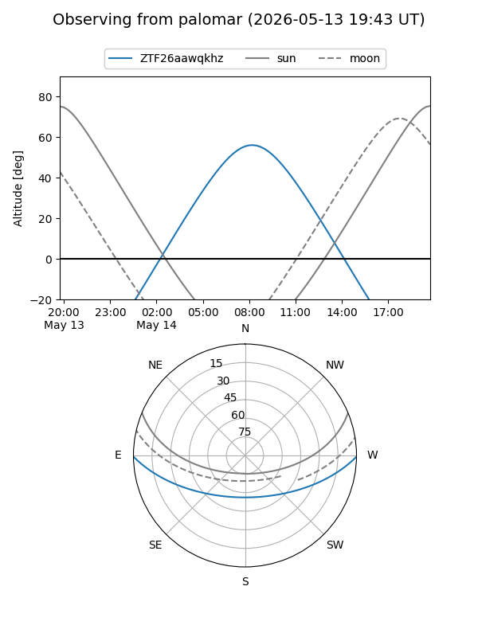

ZTF26aawqkhz
Target ZTF26aawqkhz at 2026-05-14 10:08
Aliases and brokers:
FINK: link
Lasair: link
ALeRCE: link
alt names
ZTF26aawqkhz (ztf,fink_ztf)
Coordinates:
equatorial (ra, dec) = 237.8166,-0.43091
equatorial (HMS+DMS) = 15:51:15.99,-00:25:51.29
galactic (l, b) = (7.9398,+38.78061)
Flags:
Photometry:
last ztfg=20.34
1 ztfg detections
Lightcurve

Visibility


Additional plots